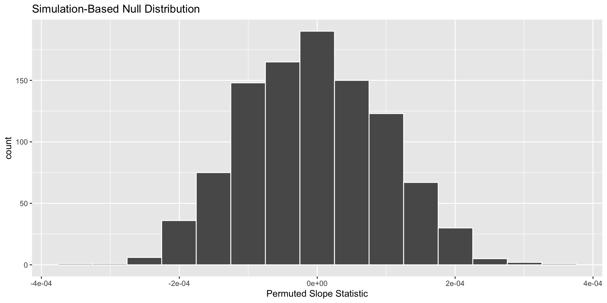
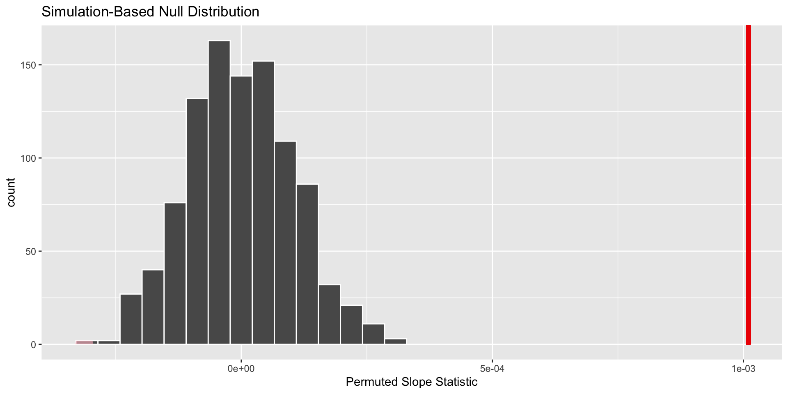

🧑🏽🔬 P-values & Hypothesis Tests
Plan for the rest of the quarter
Weeks 8, 9, & 10
Week 8
- Learn about hypothesis testing for SLR & MLR
- Compare “visual” model selection with p-value model selection
Week 9
- Learn about one-way ANOVA
- Get started on first portion of Final Project
Week 10
- Learn about two-way ANOVA
- Finish Final Project
Upcoming Deadlines
- Lab 6 revisions are due on Thursday (by midnight)
- Statistical Critique 2 is due next Monday (at 5pm)
- Final revisions on all assignments will be accepted until Sunday, March 17
Revision Deadlines
If you did not submit revisions by the deadline (or forgot to include your reflections), your assignment is not eligible for additional revisions.
you…
- understand the importance of sampling variability
- know about using confidence intervals to estimate a range of plausible values for the population parameter
- want to know how p-values fit in
What if I want to know if the population parameter differs from a specific value?
. . .
Hypothesis test!
Hypothesis test goal:
Assess how different what we saw in our data is from what could have happened if the null hypothesis was true*
. . .
*For hypothesis tests, we live in an alternative universe where \(H_0\) is true
How can we approximate what could have happened if the null was true?
. . .
Permutation!
A Permutation Resample
Assumes the original sample is “representative” of observations in the population
Uses the original sample to generate new samples that might have occurred if the null hypothesis was true.
. . .
We can use statistics from these resamples to approximate the true sampling distribution under the null!
Why do we want a sampling distribution?
Testing a Population Parameter
Like before, we are interested in knowing how a statistic varies from sample to sample.
Knowing a statistic’s behavior helps us make better / more informed decisions!
This helps us know what statistics are more or less likely to occur if the null hypothesis is true.
p-values
. . .
Quantify how “surprising” what we saw in our data is, if the null hypothesis was true
How do I get a p-value?
. . .
Permuting!
. . .
From your original sample, separate the \(x\) values from the \(y\) values.
Create new ordered pairs by randomly pairing \(x\) values with \(y\) values (permuting the labels).
. . .
This is your permuted resample.
. . .
- Repeat this process many, many times.
. . .
- Calculate a numerical summary (e.g., slope) for each permutation resample.
. . .
These are your permuted statistics.
Permutation Distribution
. . .
definition: a distribution of the permuted statistics from every permuted resample
. . .
Displays the variability in the statistic that could have happened with repeated sampling, if the null hypothesis was true.
. . .
Approximates the true sampling distribution under the null!
How do I get my p-value?
. . .
Compare the observed statistic with the statistics produced assuming the null hypothesis was true.
. . .
A p-value summarizes the probability of obtaining a sample statistic as or more extreme than what we observed, if the null hypothesis was true.
Your turn!
What is one similarity and one difference between
a permutation distribution
a bootstrap distribution
Exploring the hbr_maples dataset!

stem_length: a number denoting the height of the seedling in millimeters
stem_dry_mass: a number denoting the dry mass of the stem in grams
. . .
What condition do we need to be worried about?
In this sample of 359 sugar maples…
\[\widehat{\text{stem dry mass}} = -0.043 + 0.001 \times \text{stem length}\]
. . .
What slope could have happened if there was no relationship between stem length and stem dry mass?
Generating a permuted resample and calculating permuted statistics
. . .
Step 1: specify() your response and explanatory variables
. . .
Step 2: hypothesize() what would happen under the null
. . .
Step 3: generate() permuted resamples
. . .
Step 4: calculate() the statistic of interest
Step 1: Specify your variables!
hbr_maples %>%
specify(response = stem_dry_mass,
explanatory = stem_length)Step 2: State your hypothesis!
hbr_maples %>%
specify(response = stem_dry_mass,
explanatory = stem_length) %>%
hypothesize(null = "independence")"independence" – the assumed relationship between the explanatory and response variables under the null hypothesis
. . .
Independence of variables
Note! This is different from assuming your observations are independent!
Step 3: Generate your resamples!
hbr_maples %>%
specify(response = stem_dry_mass,
explanatory = stem_length) %>%
hypothesize(null = "independence") %>%
generate(reps = 1000, type = "permute"). . .
reps – the number of resamples you want to generate
"permute" – the method that should be used to generate the new samples
Don’t worry,
infer will let you know if you missed something!
hbr_maples %>%
specify(response = stem_dry_mass,
explanatory = stem_length) %>%
generate(reps = 1000, type = "permute")Error: Permuting should be done only when doing independence hypothesis test. See `hypothesize()`.
In addition: Warning message:
You have given `type = "permute"`, but `type` is expected to be `"bootstrap"`.
This workflow is untested and the results may not mean what you think they mean. Step 4: Calculate your statistics!
hbr_maples %>%
specify(response = stem_dry_mass,
explanatory = stem_length) %>%
hypothesize(null = "independence") %>%
generate(reps = 1000, type = "permute") %>%
calculate(stat = "slope") Your turn!
Why is the hypothesize() function used to make a null distribution but not for a bootstrap distribution?
What does the null = "independence" input in hypothesize() mean? What is it assuming about the variables declared in the specify() step?
The final product
visualise(null_dist) +
labs(x = "Permuted Slope Statistic")
Is our observed statistic unlikely if the null hypothesis was true?
visualise(null_dist) +
shade_p_value(obs_stat = obs_slope,
direction = "two-sided") +
labs(x = "Permuted Slope Statistic")
The p-value is…
get_p_value(null_dist,
obs_stat = obs_slope,
direction = "two-sided") Warning: Please be cautious in reporting a p-value of 0. This result is an
approximation based on the number of `reps` chosen in the `generate()` step.
See `?get_p_value()` for more information.# A tibble: 1 × 1
p_value
<dbl>
1 0. . .
Why did we get a warning?
How do we interpret a p-value?
. . .
Need:
- probability of what we saw in the data
- assuming the null hypothesis is true
. . .
The probability of observing a slope statistic (for the relationship between stem length and stem dry mass) as or more extreme than what was observed is less than 1 in 1000, if there was no relationship between a sugar maple’s stem length and stem dry mass.
Classic interpretation mistakes
“The probability that the null hypothesis is true is about 0%.”
. . .
You assume the null is true when you calculate a p-value!
Grade Check-in
Midterm Projects – Study Limitations
You must justify why you believe you can infer onto a population larger than your sample!
. . .
Causal statements do not come from random / representative samples!
Midterm Project Grades
| Excellent Project | Satisfactory Project | Progressing Project | No Credit |
|---|---|---|---|
| At most one section is marked “Satisfactory” the remainder are marked “Excellent” | At most one section is marked “Progressing” the remainder are marked “Satisfactory” or “Excellent” | At most two sections are marked “Progressing” the remainder are marked “Satisfactory” | At most one section is marked “Satisfactory” or “Excellent” the remainder are marked “Progressing” |